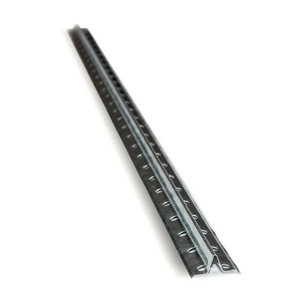
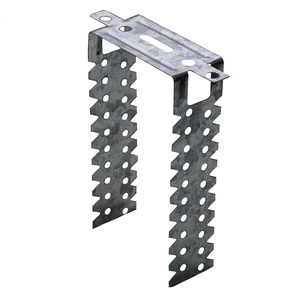
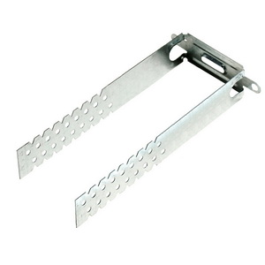
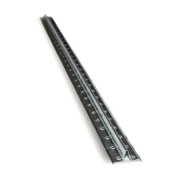
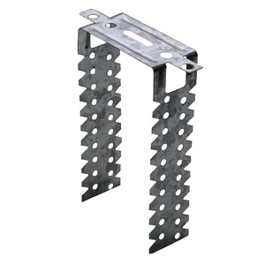
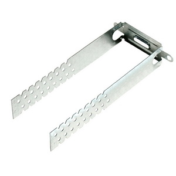

The stamped products manufacturing in Potoki Group corresponds to the UNS. We are the Ukraine leader of sheet metal processing. It was hard to achieve such a result. But, application of German production technologies and priority of quality over quantity have yielded results. As result, Potoki Group got hundreds of customers appreciated our stamped products positively.
Using only branded German equipment, constantly upgrading skills of the masters, we bring out the manufacture of stamped details to a higher level. Stamped metal products are quite simple. But, non-compliance with technical conditions and using of unsuitable sheet metal leads to detales marriage. Therefore, we all do according to international standards and do not economize on metal.
Every feedback is important to us. Therefore, we pay attention to small things. Potoki Group also handles delivery anywhere in Ukraine. And our production facilities are ready to produce any quantity without loss of quality.
We look forward to long-term cooperation. We are trusted. Among our partners there are giants well-known abroad. This can not be achieved without proper execution of each order.


 




